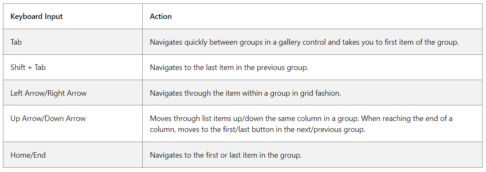
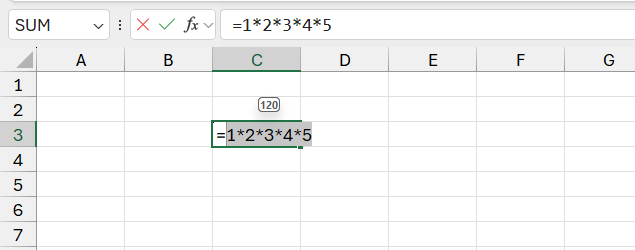

03/04 - Đối với các trang tính lớn, Excel có thể thu thập các dữ liệu (Check Performance), định dạng không cần thiết và đề xuất cách giải quyết chúng.
Chú ý: Quá trình tối ưu hóa có thể gây ra những thay đổi cho bảng tính.
What's New in Excel (Mar 2024)
18/03 - Thêm tính năng Office Scripts cho Excel 365E1 và 365F3.
15/03 - Thêm một lớp bảo mật cho bảng tính (Chặn các phần bổ trợ không đáng tin cậy).
12/03 - Đối với tệp được chia sẻ, có thể tạo và phân công nhiệm vụ trong bảng tính bằng cách gắn thẻ thành viên @mentions.
What's New in Excel (Dec 2023)
14/12 - Thêm tính năng Catch up giúp bạn nắm rõ hơn về lịch sử các hoạt động, thay đổi và cập nhật quan trọng trong tệp được chia sẻ.
Lưu ý: tệp phải được lưu trữ trong OneDrive hoặc SharePoint và chia sẻ với những người khác có quyền Edit.
What's New in Excel (Nov 2023)
14/11 - Thêm hai hàm (Aggregate Functions) GROUPBY và PIVOTBY sử dụng để tổng hợp dữ liệu.
What's New in Excel (Oct 2023)
31/10 - Thêm tính năng Checkboxes in Cells.
26/10 - Kiểm soát chuyển đổi dữ liệu khi nhập hoặc paste giá trị vào ô, tìm kiếm và thay thế giá trị hoặc mở csv, txt trên Excel.
20/10 - Cải tiến trình kết nối với các trang web và nhập dữ liệu vào sổ làm việc Excel của mình.
What's New in Excel (Sep 2023)
26/09 - Cải tiến Python, Python Editor từ Excel Labs và hỗ trợ Copilot trên Python.
22/09 - Tự động hoàn thành từ khóa với Dropdown List gợi ý trên Data Validation.
What's New in Excel (Aug 2023)
28/08 - tích hợp phân tích Python và Excel (hiện có sẵn cho tất cả người dùng).
Chú ý: Python trong Excel sử dụng hàm Python xl() tùy chỉnh để giao tiếp giữa Excel và Python.
Hàm xl() chấp nhận các đối tượng như phạm vi, bảng, truy vấn và tên tương tự như một hàm Excel.
Kết quả của mã Python (Ctrl + Enter) chỉ có thể được trả về dưới dạng kết quả của hàm =PY() Excel.
24/08 - Đối với chế độ tính toán thủ công, Excel sẽ hiển thị các ô cũ này bằng cách loại bỏ chúng thông qua định dạng gạch strike.
20/08 - Sử dụng phông chữ đơn cách (monospaced font) trong Formulabar giúp chúng dễ đọc và gỡ lỗi hơn.
16/08 - cho phép người dùng tạo một bảng trong BI và được kết nối trực tiếp trong Excel.
10/08 - Cải tiến hộp thoại thông báo Save/Unsave với các thông tin bổ sung.
06/08 - Đơn giản hóa quá trình chia sẻ file qua Mail, sao chép liên kết..
What's New in Excel (Jul 2023)
19/07 - Cập nhật thêm Office Theme (new default font, color palette, style, and line weights) cho các định dạng ô và bảng.
16/07 - Thêm tính năng chèn ảnh vào ô (Phân biệt với hàm Image chỉ hoạt động với ảnh Web) để ảnh trở thành giá trị ô thực tế.
Chúng có thể được sử dụng trong bảng, sắp xếp, lọc hoặc đưa vào công thức.
15/07 - Thêm tính năng [Share a section] chia sẻ chỉ một phần của sổ làm việc (có thể là một phạm vi, bảng hoặc biểu đồ cụ thể).
What's New in Excel (Jun 2023)
26/06 - Thêm tính năng gợi ý hàm, đề xuất công thức (do AI điều khiển và dự đoán sau khi nhập =).
20/06 - PivotTable hỗ trợ hình ảnh và các loại dữ liệu Excel khác như Cổ phiếu và Địa lý (images and data types).
16/06 - Thêm tính năng lấy dữ liệu (Get Data) từ Dynamic Arrays cho Power Query.
12/06 - Làm mới (Rapid Refresh) nhanh các file được chia sẻ khi nhiều người cùng làm việc trên đó.
08/06 - Cho phép xem lại các thay đổi đang chờ xử lý và quay lại (Undo) các thay đổi trước đó trên tệp được chia sẻ.
What's New in Excel (May 2023)
19/05 - nâng cấp hiệu quả sử dụng bàn phím để di chuyển qua các công cụ trên Ribbon bằng cách thêm các điểm dừng tab cho từng nhóm công cụ.

16/05 - Hỗ trợ Date Filters, và tính toán ngầm định (Implicit Measures) cho PivotTable.
What's New in Excel (Apr 2023)
06/04 - Quick Access Toolbar được hiển thị theo mặc định.
What's New in Excel (Mar 2023)
10/03 -Thêm tính năng Copy giá trị tính toán từ Status Bar vào Clipboard (chỉ với 1 click).
What's New in Excel (Jan 2023)
26/01 - Thêm chú giải công cụ trả về kết quả của phần công thức được bôi đen.

18/01 - Thêm Record Action cho Office Scripts nền tảng tự động hóa tương tự Record Macro VBA trong Excel.
Những Hành động này sẽ ghi lại sau đó được dịch thành tập lệnh mà bạn có thể chạy cho lần sau.
Nếu cần sửa đổi tập lệnh của mình, bạn có thể sử dụng Code Editor, một trình soạn thảo dựa trên TypeScript trực tiếp trong Excel.
What's New in Excel (Dec 2022)
20/12 - Thêm phím tắt để mở Power Query editor (Alt + F12).
16/12 - Tạo các kiểu dữ liệu Power Query lồng nhau (Còn gọi là Nhóm trong nhóm).
What's New in Excel (Nov 2022)
24/11 - Thêm tính năng lấy dữ liệu từ hình ảnh (Data from Picture) và chèn trở lại Excel dưới dạng bảng.
20/11 - Thêm lịch sử chỉnh sử sổ làm việc khi được chia sẻ (Show Changes).
What's New in Excel (Oct 2022)
25/10 - Tự động hóa tác vụ với Office Scripts (Phải tạo thủ công cho đến khi có trình tạo tự động 06/2024).
22/10 - Thêm Navigation Pane (Ngăn Điều hướng) dùng để tìm và truy cập các thành phần như bảng, biểu đồ, PivotTable và hình ảnh trong sổ làm việc.
20/10 - Thêm searchbox tìm kiếm lệnh bất kỳ (Shift+F10).
16/10 - Thêm các hàm DAX Functions cho Data Models và Power Pivot (công nghệ tương tự được Power BI sử dụng).
14/10 - Tùy chọn dán chỉ giá trị (Paste Values Only - Ctrl + Shift +V).
What's New in Excel (Sep 2022)
25/09 - Modern Comments trong Excel dành cho Windows hiện được xây dựng trên khung React Native.
22/09 - Cho phép Tạo biểu đồ có phạm vi nguồn dữ liệu được căn chỉnh theo kết quả của công thức mảng.
What's New in Excel (Aug 2022)
22/08 - Thêm hàm Image (Chèn ảnh Web vào ô), ảnh sẽ tồn tại trong ô và là giá trị của ô.
Bạn có thể sử dụng sắp xếp và lọc, tính toán và viết công thức bằng hình ảnh, di chuyển hoặc đổi kích thước các ô.
What's New in Excel (May 2022)
17/03 - Thêm 14 hàm Excel mới được thiết kế để giúp bạn thao tác văn bản và mảng.
1. Hàm thao tác chuỗi: TEXTBEFORE, TEXTAFTER, TEXTSPLIT.
2. Hàm định hình mảng: VSTACK, HSTACK, TOROW, TOCOL, WRAPROW, WRAPCOL.
3. Hàm thay đổi mảng: TAKE, DROP, CHOOSEROWS, CHOOSECOLS, EXPAND.
.
What's New in Excel (Feb 2022)
2/2 - hỗ trợ việc sử dụng Hypelinks trong threaded comments (Phân biệt với Notes Excel).
What's New in Excel (Nov 2021)
11/11 - Cải thiện phản hồi cho Excel365.
What's New in Excel (Oct 2021)
05/10 - Thêm tính năng cuộn mượt mà trong Excel (Bạn có thể dừng cuộn giữa chừng trong một hàng hoặc cột).
What's New in Excel (July 2021)
30/07 - Phát hành Navigation pane (Quản lý bố cục của 1 sổ làm việc, xem các thành phần khác nhau tạo nên sổ làm việc và điều hướng trực tiếp đến các thành phần đó).